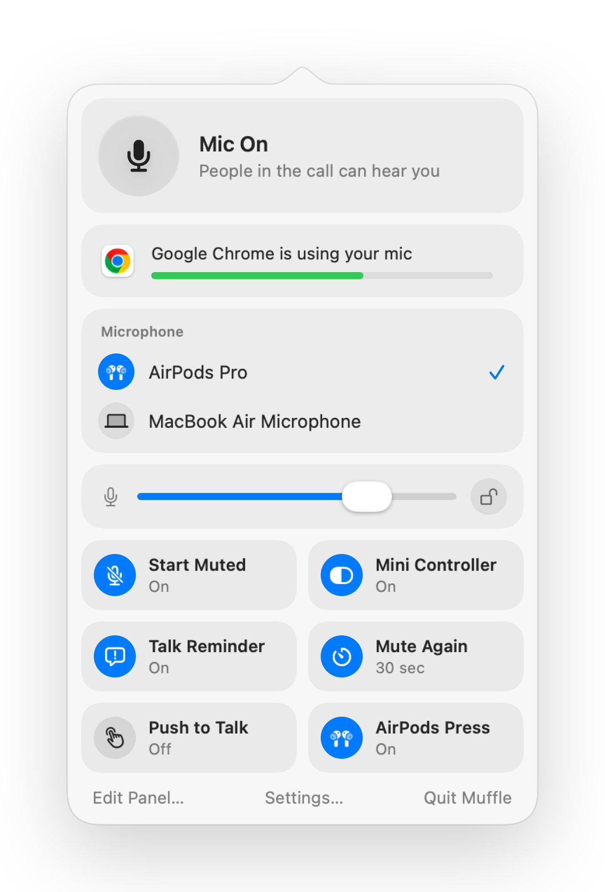

How to mute calls in any browser tab on a Mac
More and more calls run in the browser: Google Meet, Teams on the web, virtual offices like SoWork and Gather, Whereby, Jitsi. Each has its own mute button and shortcut, and they only work while that tab is in front.
Browsers also ignore the AirPods mute press on a Mac. Muffle takes the press, or one global shortcut, and mutes the microphone for every tab at once.
Mute any web call
- 1
Install Muffle and allow microphone access.
- 2
Open your call in any browser tab.
- 3
Press your AirPods stem or Control-Option-M to mute, from any app or tab.
- 4
Watch the menu bar icon: red means the mic is off.

- Virtual offices keep your mic open for hours. Turn on the floating mini controller to always see your state.
- The “You're muted” reminder tells you when you start talking while muted.
Questions
Why doesn't the AirPods press work in Chrome?
Chrome doesn't support the macOS AirPods mute gesture for web pages. Muffle receives the press instead and mutes the mic itself.
Does it work in SoWork and Gather?
Yes. Any site that uses your microphone is muted when Muffle turns the mic off.